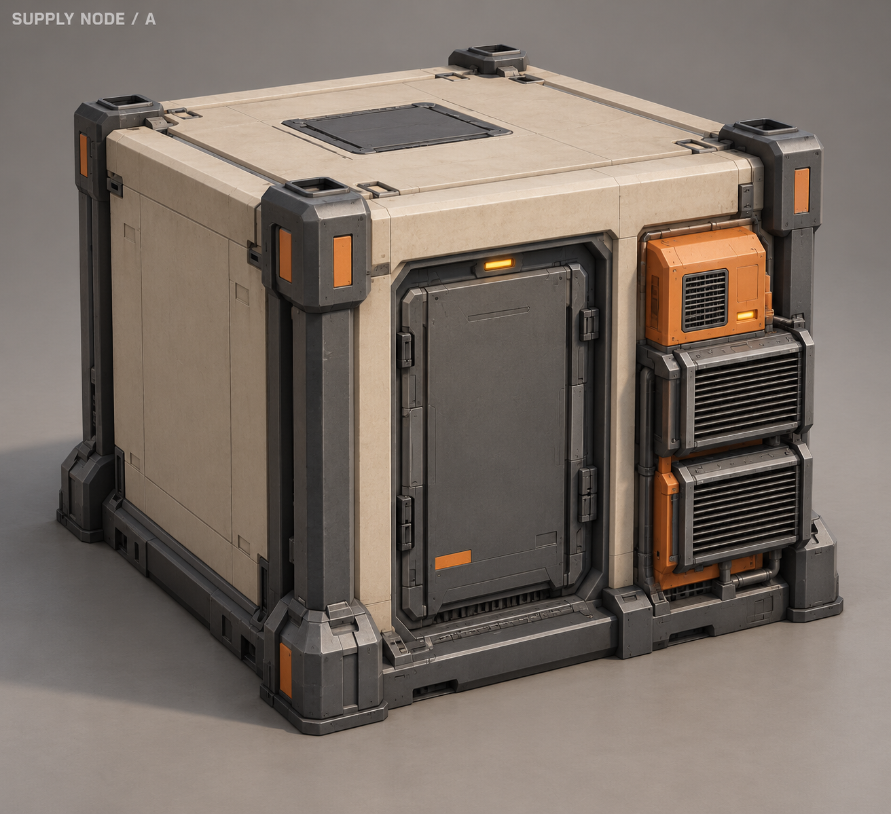
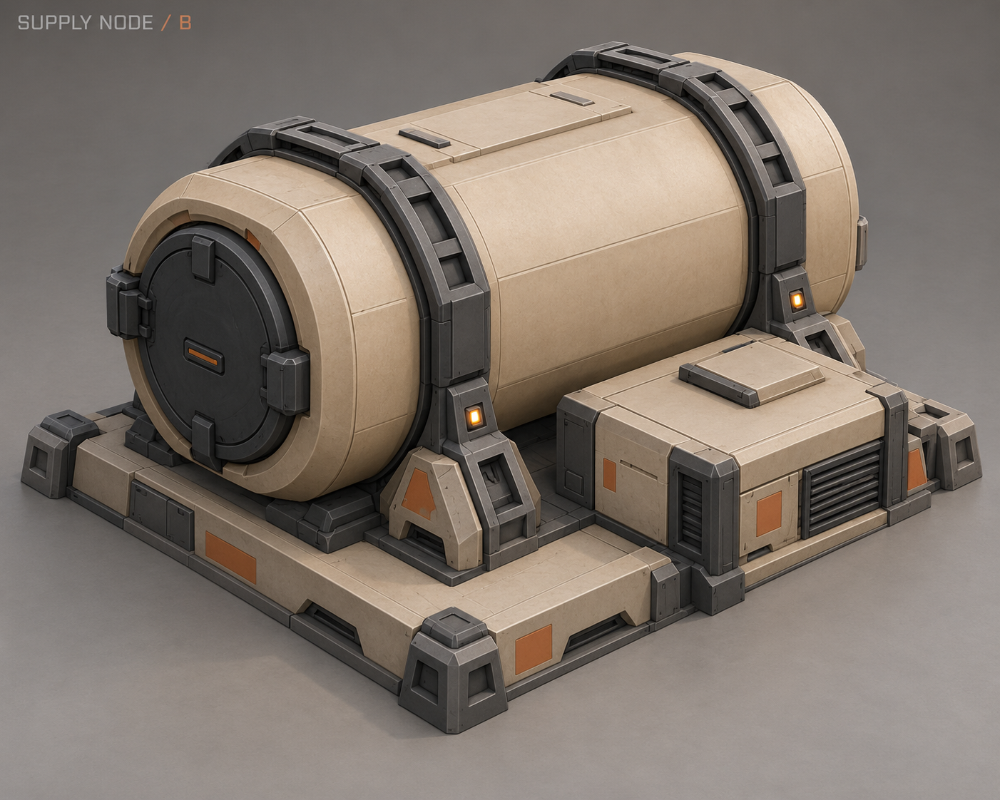
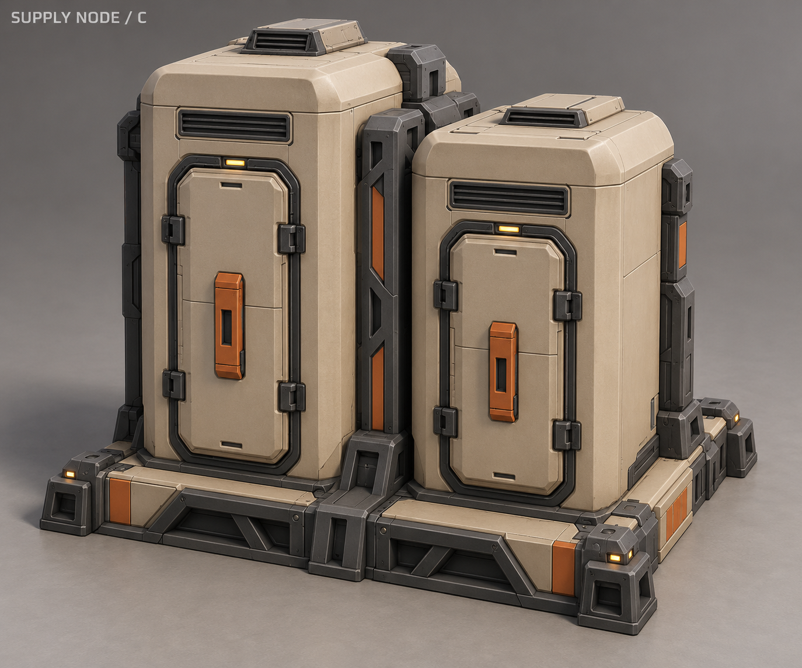
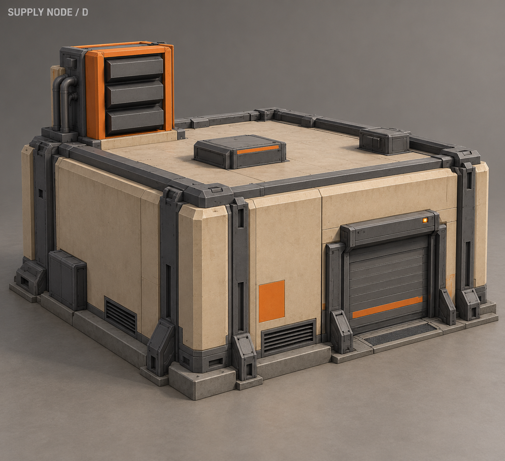
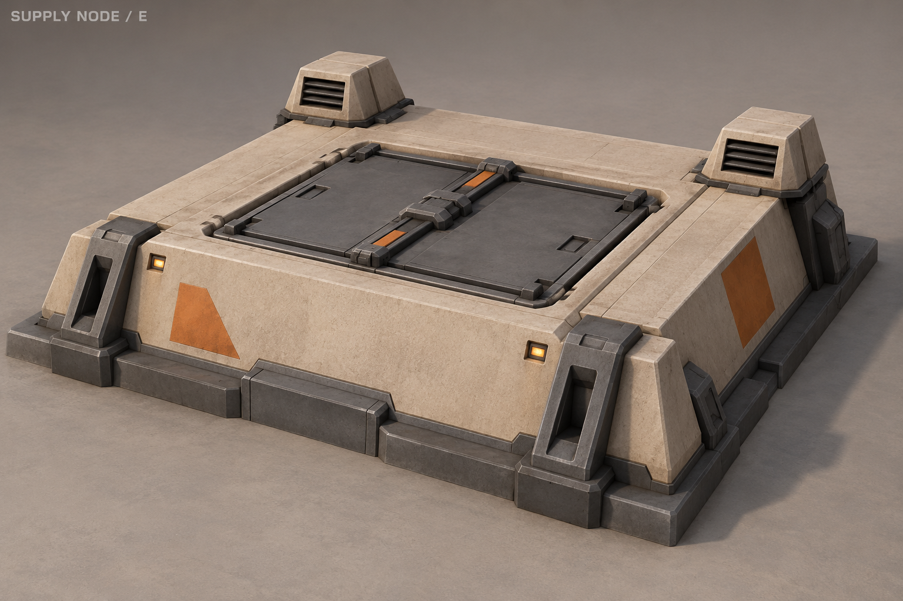
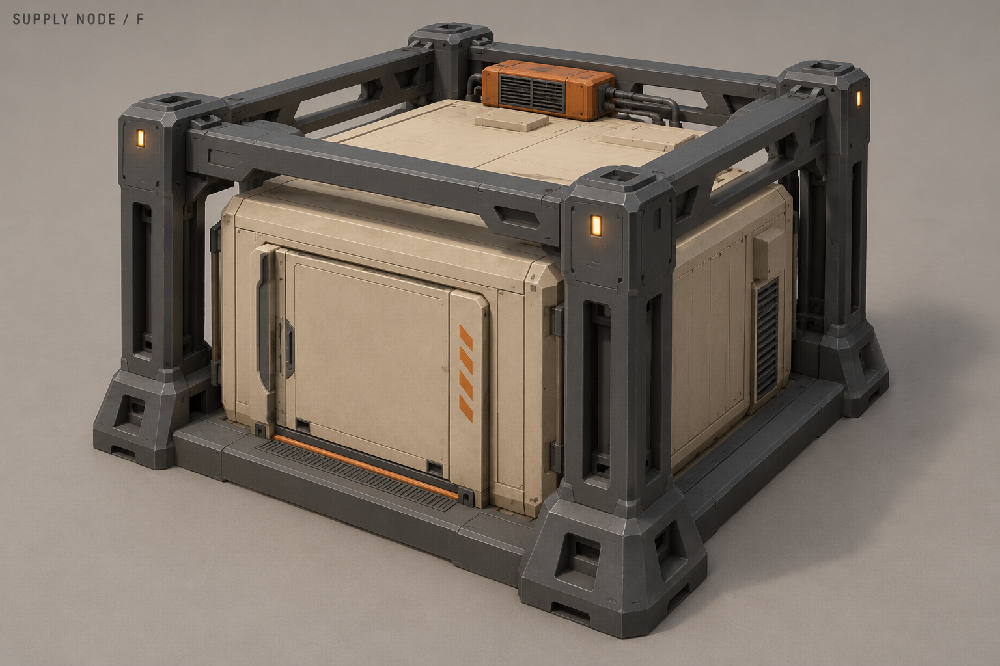
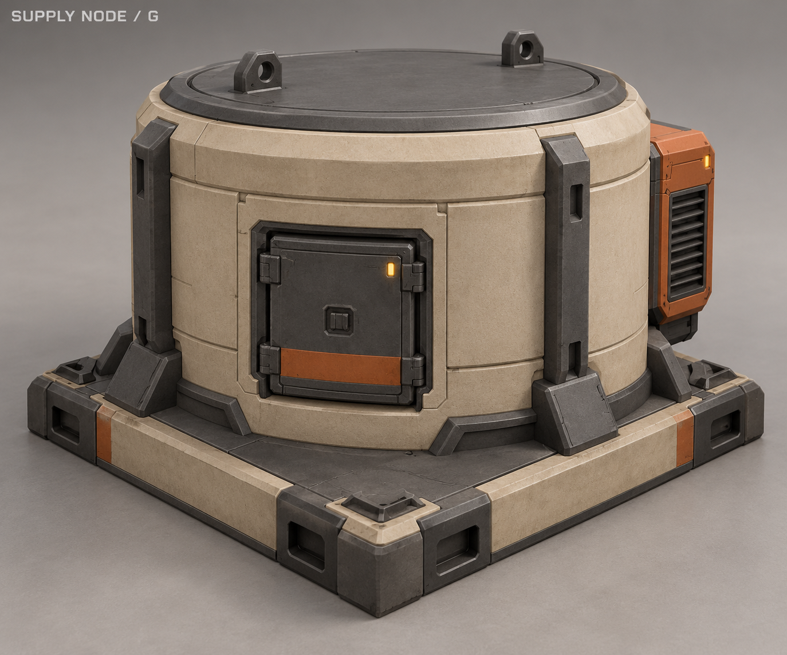
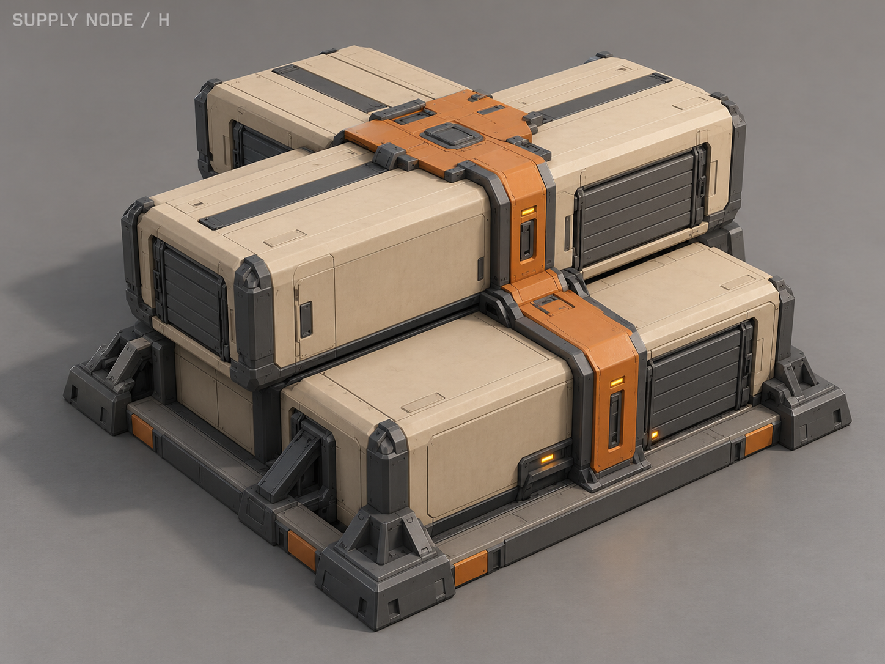

A «Холодный модуль»
Компактный холодильный модуль с толстыми стенками и наружным охлаждением.

B «Бронекапсула»
Защищённая капсула с торцевым грузовым люком и двумя силовыми поясами.

C «Двойной запас»
Два высоких хранилища с общей центральной силовой стойкой.

D «Климатический блок»
Небольшой склад с плоской крышей и выраженным климатическим блоком.

E «Погреб»
Низкий вход в заглублённый запас: тяжёлая крышка и вентиляционные головы.

F «Склад в раме» · ВЫБРАН
Закрытый складской контейнер внутри отдельной защитной рамы.

G «Барабан»
Короткий цилиндрический склад с толстой крышкой и грузовым люком.

H «Перевязь»
Связка закрытых грузовых модулей, стянутая общим замком.